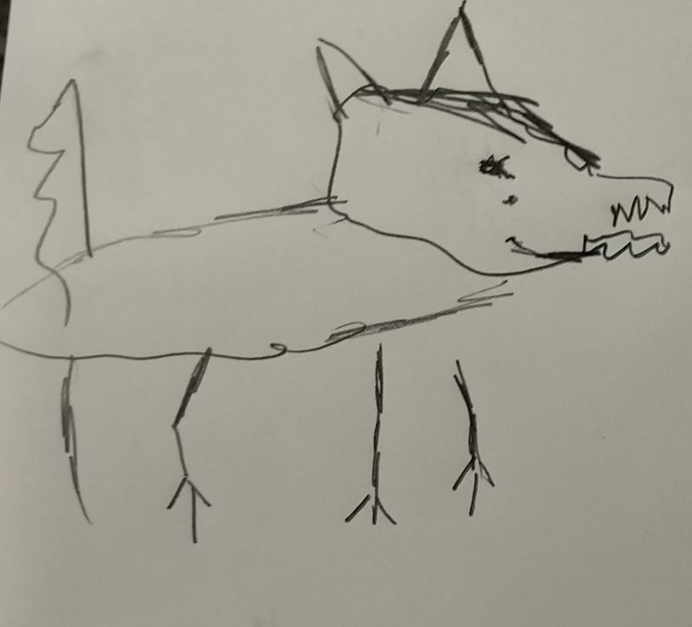
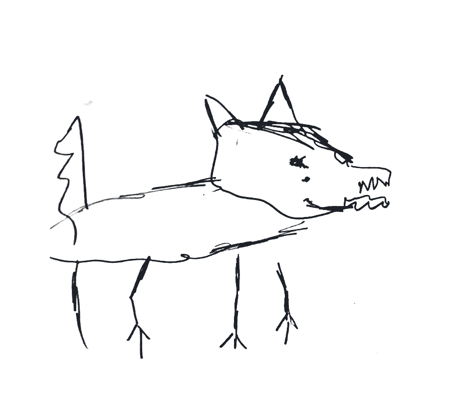

01物种简介 ／ INTRO
鸭狼，一种生活在天津海河流域的动物，最早由李氏发现。目前在新华动物园仅存一只，是保护动物。
物种展板 ／ SPECIES PANEL
Anas lupus lii
—— 又称「李氏鸭狼」，详见下文「名称由来」。

鸭狼，一种生活在天津海河流域的动物，最早由李氏发现。目前在新华动物园仅存一只，是保护动物。
鸭狼该归入哪一科，至今仍有争议：一派主张把它归入犬科，另一派主张让它独立成科。本展板暂从后一说，最终归属以正式发表为准。
该种最早由李氏发现并记录。按惯例，新种多以发现者的姓氏命名，故名「李氏鸭狼」。
⚠ 展区内严禁投喂、严禁模仿鸭叫、严禁将手指伸入屏幕

动作记录：起跳与咬人 · 共 5 帧 / 0.9 秒
装置待机。按下按钮，即可播放起跳与咬人的动作分解。
本次参观已记录互动 0 次
说明：本装置播放的是动作分解图，共 5 帧、0.9 秒内播完，与动物本体无关。